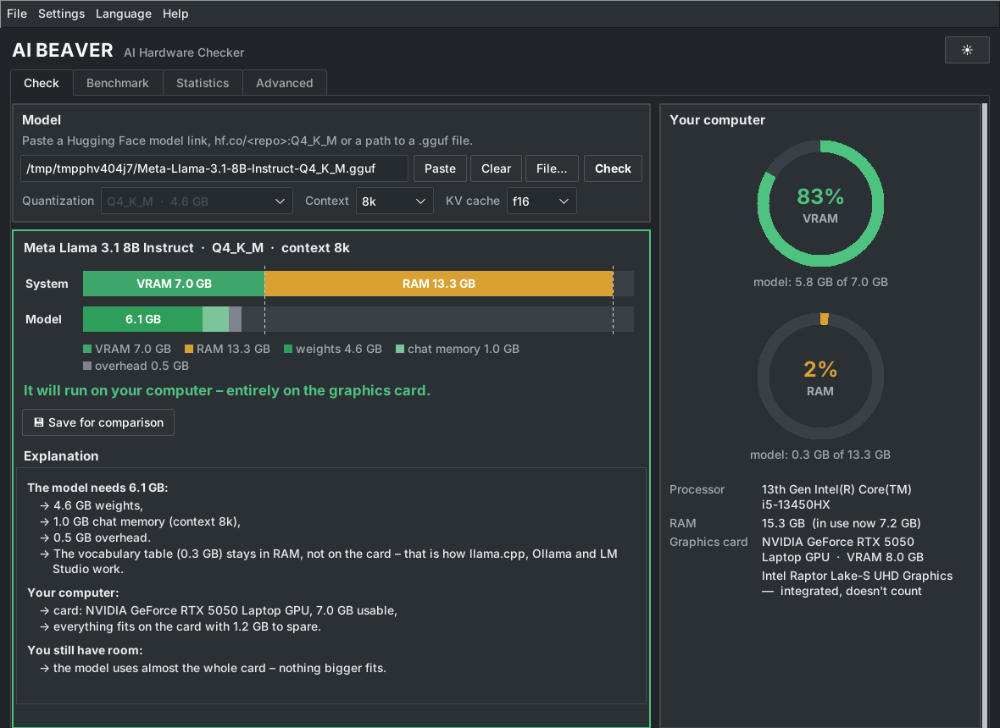

AI Bóbr
Czy ten lokalny model pójdzie na Twoim komputerze, jak szybko i jak dobrze?
Will this local model run on your computer, how fast and how well?
- Sprzęt: liczy pamięć karty i RAM z samego nagłówka pliku GGUF, bez pobierania modelu. Także modele obrazów i mowy.
- Benchmark: mierzy prędkość przez Ollamę i pokazuje na żywo procesor, temperatury, pamięć i kartę.
- Jakość: testy oceniane zwykłym kodem, nie innym modelem. Edytor własnych testów w około 40 językach.
- Diagnostyka: sprawdza token początku i kruchość promptu.
- Hardware: works out VRAM and RAM needs from the GGUF file header alone, without downloading the model. Image and speech models too.
- Benchmark: measures speed through Ollama with a live view of CPU, temperatures, memory and GPU.
- Quality: tests graded by plain code, not by another model. An editor for your own tests in about 40 languages.
- Diagnostics: checks the start-of-text token and prompt fragility.